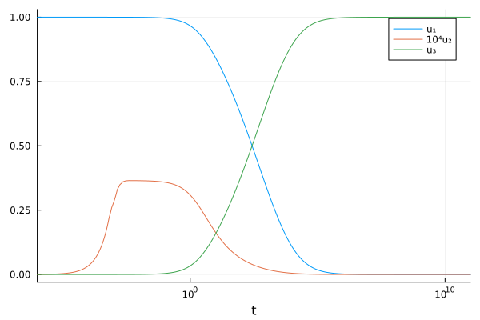
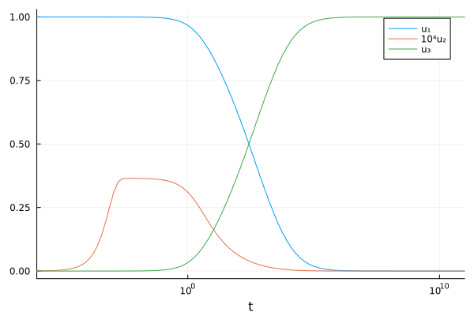

Tutorial: Solution of Robertson problem
In this tutorial we show that MPRK schemes can be used to integrate stiff problems. We also show how callbacks can be used to change the time step in non-adaptive schemes.
Definition of the production-destruction system
The well known Robertson problem is given by
\[\begin{aligned} u_1' &= -0.04u_1+10^4 u_2u_3, & u_1(0)&=1,\\ u_2' &= 0.04u_1-10^4 u_2u_3-3⋅10^7 u_2^2, & u_2(0)&=0 \\ u_3' &= 3⋅10^7 u_2^2, & u_3(0)&=0. \end{aligned}\]
The time domain of interest is $t\in[0,10^{11}]$, because of which some kind of adaptive time stepping is required.
The model can be represented as a conservative PDS with production terms
\[\begin{aligned} p_{12}(t,\mathbf{u}) &= 10^4u_2u_3,& p_{21}(t,\mathbf{u}) &= 0.04u_1, & p_{32}(t,\mathbf{u}) &= 3⋅10^7u_2^2, \end{aligned}\]
whereby production terms not listed have the value zero. Since the PDS is conservative, we have $d_{ij}=p_{ji}$ and the system is fully determined by the production matrix $\mathbf P=(p_{ij})$.
Solution of the production-destruction system
Now we are ready to define a ConservativePDSProblem and to solve this problem with any method of PositiveIntegrators.jl or OrdinaryDiffEq.jl which is suited for stiff problems.
Since this PDS consists of only three differential equations we provide an out-of-place implementation for the production matrix. Furthermore, we use static arrays from StaticArrays.jl for additional efficiency. See also the tutorials on the solution of an NPZD model or an stratospheric reaction problem.
using PositiveIntegrators, StaticArraysfunction prod(u, p, t) @SMatrix [0.0 1e4*u[2]*u[3] 0.0; 4e-2*u[1] 0.0 0.0; 0.0 3e7*u[2]^2 0.0]endu0 = @SVector [1.0, 0.0, 0.0]tspan = (0.0, 1.0e11)prob = ConservativePDSProblem(prod, u0, tspan)sol = solve(prob, MPRK43I(1.0, 0.5))using Plotsplot(sol, tspan = (1e-6, 1e11), xaxis = :log, idxs = [(0, 1), ((x, y) -> (x, 1e4 .* y), 0, 2), (0, 3)], label = ["u₁" "10⁴u₂" "u₃"])
PositiveIntegrators.jl provides the function isnonnegative (and also isnegative) to check if the solution is actually nonnegative, as expected from an MPRK scheme.
isnonnegative(sol)trueUsing callbacks to solve the Robertson problem with non-adaptive schemes
The SSPMPRK43() scheme is only available with fixed time stepping. With a scheme like this, it would take a huge amount of time to solve the Robertson problem, since the time step must be chosen very small to accurately solve the problem in its initial phase. However, the use of a callback allows us to modify the time step size after each step, which makes a solution with a fixed step method possible.
In the following example the callback increases the time step size by a factor of 1.5 after each time step.
using DiffEqCallbacksusing DiffEqBasestepsize_callback = DiscreteCallback( Returns(true), # adapt the step size after every time step integrator -> set_proposed_dt!(integrator, 1.5 * get_proposed_dt(integrator)); save_positions = (false, false), initialize = (c, u, t, integrator) -> set_proposed_dt!(integrator, 1.0e-5))sol_cb = solve(prob, SSPMPRK43(); dt = Inf, callback = stepsize_callback);plot(sol_cb, tspan = (1e-6, 1e11), xaxis = :log, idxs = [(0, 1), ((x, y) -> (x, 1e4 .* y), 0, 2), (0, 3)], label = ["u₁" "10⁴u₂" "u₃"])
This solution is also nonnegative.
isnonnegative(sol_cb)truePackage versions
These results were obtained using the following versions.
using InteractiveUtilsversioninfo()println()using PkgPkg.status(["PositiveIntegrators", "StaticArrays", "LinearSolve", "DiffEqCallbacks", "DiffEqBase"], mode=PKGMODE_MANIFEST)Julia Version 1.12.7
Commit 6d172b025e4 (2026-08-15 08:05 UTC)
Build Info:
Official https://julialang.org release
Platform Info:
OS: Linux (x86_64-linux-gnu)
CPU: 4 × INTEL(R) XEON(R) PLATINUM 8573C
WORD_SIZE: 64
LLVM: libLLVM-18.1.7 (ORCJIT, sapphirerapids)
GC: Built with stock GC
Threads: 1 default, 1 interactive, 1 GC (on 4 virtual cores)
Environment:
JULIA_PKG_SERVER_REGISTRY_PREFERENCE = eager
Status `~/work/PositiveIntegrators.jl/PositiveIntegrators.jl/docs/Manifest.toml`
[2b5f629d] DiffEqBase v7.20.0
[459566f4] DiffEqCallbacks v4.19.3
[7ed4a6bd] LinearSolve v5.15.1
[d1b20bf0] PositiveIntegrators v0.2.20-DEV `~/work/PositiveIntegrators.jl/PositiveIntegrators.jl`
[90137ffa] StaticArrays v1.9.19